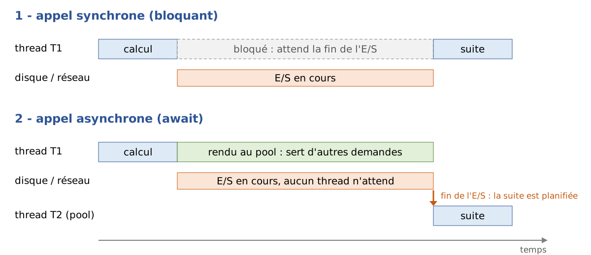

9. La programmation asynchrone
Le chapitre précédent a présenté les threads : on peut faire exécuter plusieurs morceaux de code « en même temps », les synchroniser, et confier des tâches au pool de threads. Ce chapitre, absent du cours de 2008, traite d'une question voisine mais différente : comment écrire un programme qui attend beaucoup (le disque, le réseau, une base de données) sans immobiliser de threads pendant ces attentes. La réponse de .NET tient en deux mots clés du langage C#, [async] et [await], et en un type, [Task]. Ils sont aujourd'hui partout : les chapitres suivants les utiliseront pour accéder aux bases de données ([OpenAsync], [ExecuteReaderAsync], [ToListAsync], [SaveChangesAsync]), pour écrire des serveurs TCP ([AcceptTcpClientAsync]), des clients web ([HttpClient]) et des services web avec ASP.NET Core.
Tous les exemples du chapitre sont des applications fichier unique ([async-01.cs], [async-02.cs]…) que l'on exécute avec [dotnet run async-NN.cs] dans le dossier [09-async]. Beaucoup d'entre eux mesurent des durées avec un chronomètre ([Stopwatch]) : les millisecondes affichées varient d'une exécution à l'autre et d'une machine à l'autre (les exemples ont été exécutés sur une machine à 2 processeurs). Ce sont les ordres de grandeur qui comptent : 1 seconde ou 3 secondes, 300 ms ou 0 ms.
9.1. Pourquoi l'asynchronisme
9.1.1. Les opérations qui attendent
Un programme fait deux sortes de travail :
- du calcul, qui occupe le processeur : trier une liste, calculer un impôt, analyser un texte ;
- des entrées / sorties (E/S), qui consistent pour l'essentiel à attendre un périphérique : lire un fichier sur le disque, envoyer une requête à un serveur web et attendre sa réponse, exécuter une requête SQL sur un serveur de bases de données.
Les ordres de grandeur sont très différents. Un processeur exécute quelques milliards d'instructions par seconde. Une lecture sur un disque SSD prend de l'ordre d'un dixième de milliseconde, un aller-retour sur un réseau local une fraction de milliseconde, un aller-retour vers un serveur situé à l'autre bout du pays quelques dizaines de millisecondes, une requête SQL un peu complexe parfois plusieurs secondes. Pendant ces attentes, le processeur aurait pu exécuter des millions d'instructions.
Lorsqu'un programme lit une ligne sur une connexion réseau avec une méthode synchrone (bloquante), le thread qui exécute cette lecture est bloqué : il ne fait rien, mais il existe. Il occupe de la mémoire (sa pile, de l'ordre du mégaoctet), il est connu du système d'exploitation, et surtout il n'est plus disponible pour faire autre chose. Ce n'est pas gênant dans un petit programme console qui fait une chose à la fois. Ça l'est beaucoup plus dans deux situations :
- dans un serveur : chaque client servi par un thread bloqué immobilise ce thread. Le cours de 2008 l'expliquait déjà en conclusion de son client TCP asynchrone : si le pool de threads a N threads et que les N threads font une opération bloquante, il n'y a plus de thread disponible pour un nouveau client. Un serveur web moderne sert des milliers de requêtes simultanées avec quelques dizaines de threads : c'est possible parce que ses threads ne restent jamais bloqués sur une E/S ;
- dans une interface graphique : un seul thread, le thread de l'interface, traite les clics et redessine les fenêtres. S'il est bloqué par un téléchargement, la fenêtre se fige.
L'asynchronisme consiste à lancer l'opération d'E/S, à libérer le thread pendant qu'elle se déroule (le matériel et le système d'exploitation n'ont pas besoin de lui pour transférer les données), puis à reprendre le travail lorsque l'opération est terminée, éventuellement sur un autre thread :

- en [1], le thread T1 lance l'E/S et reste bloqué jusqu'à sa fin ;
- en [2], le thread T1 lance l'E/S et retourne au pool de threads où il peut servir d'autres demandes. Lorsque l'E/S se termine, le système le signale à .NET qui fait exécuter la suite du traitement par un thread du pool, T2 (qui peut d'ailleurs être T1 s'il est libre).
Le programme [async-01.cs] mesure la différence sur 100 opérations qui attendent chacune une seconde (l'attente simule une E/S). Il utilise des instructions que nous expliquerons dans la suite du chapitre ([Task.Run], [Task.Delay], [await]) : on s'intéresse ici seulement aux résultats.
Résultats :
Commentaires :
- lignes 8-21 : la solution du cours de 2008, un thread par opération. Chaque thread exécute [Thread.Sleep(1000)] : il est bloqué pendant une seconde. Les 100 attentes se déroulent en même temps et l'ensemble dure bien une seconde (ligne 4), mais au prix de 100 threads supplémentaires : le processus en compte plus de 100 (ligne 3). Avec 10 000 opérations, il faudrait 10 000 threads ;
- lignes 23-31 : les opérations sont confiées au pool de threads ([Task.Run]), qui a été présenté au chapitre précédent. Le pool commence avec autant de threads que de processeurs (2 ici) et n'en ajoute que progressivement lorsqu'ils sont tous occupés, car il suppose que ses threads font du calcul et qu'il est inutile d'en avoir beaucoup plus que de processeurs. Mais ici ses threads ne calculent pas : ils dorment. Les opérations attendent un thread libre et l'ensemble dure… plus de vingt secondes (ligne 6). C'est ce qu'on appelle la famine du pool de threads (« thread pool starvation »), le défaut le plus fréquent des serveurs qui mélangent pool de threads et E/S bloquantes ;
- lignes 34-41 : les attentes sont asynchrones ([Task.Delay] au lieu de [Thread.Sleep]). Aucun thread n'est bloqué pendant l'attente : une minuterie du système préviendra .NET au bout d'une seconde. L'ensemble dure une seconde et le nombre de threads n'augmente pas (les threads affichés ligne 7 sont ceux que le pool a créés pendant l'étape 2 ; ils sont inoccupés) ;
- ligne 51 : [Process.GetCurrentProcess()] donne accès au processus en cours d'exécution ; sa propriété [Threads] est la collection de ses threads (ceux de .NET et ceux du système).
Retenons la leçon : pour attendre, il ne faut pas bloquer de thread. L'asynchronisme ne rend pas une E/S plus rapide ; il permet d'en mener beaucoup de front avec peu de threads, et de garder disponibles les threads dont l'application a besoin (celui de l'interface graphique, ceux du pool d'un serveur).
9.1.2. Trois modèles successifs
.NET a proposé trois façons d'écrire du code asynchrone. On rencontre encore les deux premières dans du code ancien et dans de vieux articles, il est donc utile de les reconnaître.
Modèle | Apparition | Principe |
APM (« Asynchronous Programming Model ») | .NET 1.0 (2002) | une paire de méthodes [BeginXxx] / [EndXxx]. [BeginXxx] lance l'opération et reçoit une méthode de rappel ([AsyncCallback]) ; la méthode de rappel, exécutée par un thread du pool à la fin de l'opération, appelle [EndXxx] pour obtenir le résultat ou l'exception. Exemple : [Socket.BeginConnect] / [EndConnect], utilisé par le client TCP asynchrone du cours de 2008. |
EAP (« Event-based Asynchronous Pattern ») | .NET 2.0 (2005) | une méthode [XxxAsync] qui lance l'opération et un événement [XxxCompleted] émis à sa fin. Exemples : [WebClient.DownloadStringAsync] et [DownloadStringCompleted], la classe [BackgroundWorker] (événements [DoWork], [ProgressChanged], [RunWorkerCompleted]) étudiée par le cours de 2008. |
TAP (« Task-based Asynchronous Pattern ») | .NET 4.0 (2010), C# 5 (2012) | une méthode [XxxAsync] qui rend une tâche ([Task] ou [Task<T>]) représentant l'opération en cours. Le code appelant attend la tâche avec le mot clé [await]. C'est le modèle actuel, le seul utilisé dans la suite du cours. |
Les modèles APM et EAP ont le même défaut : le code est découpé en morceaux. Ce qui s'écrit naturellement « se connecter, puis lire, puis afficher » devient une méthode qui lance la connexion, une méthode de rappel qui lance la lecture, une autre méthode de rappel qui affiche ; les variables doivent être partagées entre ces méthodes, les exceptions sont récupérées à des endroits différents, et une simple boucle (« lire tant qu'il y a des données ») devient une méthode de rappel qui se relance elle-même, comme la méthode [lecture] du cours de 2008. Le modèle TAP, avec [async] et [await], permet d'écrire du code asynchrone qui a la forme du code synchrone.
Le programme [async-02.cs] écrit le même client TCP selon les deux modèles extrêmes, APM et TAP. Il contient aussi un petit serveur, exécuté par un thread, qui répond à deux clients (la programmation réseau sera étudiée en détail au chapitre 12 ; il suffit ici de savoir qu'un client se connecte au serveur et lit le message que celui-ci lui envoie).
Résultats :
Commentaires :
- lignes 8-21 : le serveur. Il écoute sur le port 27500 de la machine locale ([IPAddress.Loopback], c'est-à-dire 127.0.0.1), accepte deux connexions l'une après l'autre et envoie à chaque client, après une demi-seconde, un message de bienvenue ;
- lignes 24-54 : le client écrit selon le modèle APM, à la manière du cours de 2008 :
- ligne 29 : [BeginConnect] lance la connexion et rend la main immédiatement (ligne 3 des résultats). Ses deux derniers paramètres sont la méthode à rappeler à la fin de la connexion, [Connecte], et un objet quelconque que la méthode de rappel retrouvera dans la propriété [AsyncState] de son paramètre [IAsyncResult] : ici le socket lui-même ;
- ligne 32 : le thread principal n'a plus rien à faire. Pour que le programme ne se termine pas avant la fin de l'échange, il attend un signal que donnera la dernière méthode de rappel : un objet [ManualResetEventSlim], dont la méthode [Wait] bloque le thread qui l'appelle jusqu'à ce qu'un autre thread appelle sa méthode [Set] (c'est une version légère des barrières [AutoResetEvent] vues avec les threads) ;
- lignes 35-43 : la méthode de rappel de la connexion. Elle doit appeler [EndConnect] avec le paramètre reçu : c'est cet appel qui termine l'opération et qui lancerait une exception si la connexion avait échoué. Elle lance ensuite la lecture avec [BeginReceive] en indiquant une seconde méthode de rappel, [Recu] ;
- lignes 47-54 : la méthode de rappel de la lecture récupère le nombre d'octets reçus avec [EndReceive], affiche le message, ferme le socket et débloque le thread principal ;
- les résultats montrent que les méthodes de rappel sont exécutées par un autre thread que le thread principal (un thread du pool et non le thread 1) ;
- lignes 57-65 : le même client avec le modèle TAP. [ConnectAsync] et [ReceiveAsync] rendent des tâches, et [await] attend leur fin sans bloquer le thread : le code se lit de haut en bas comme du code synchrone, les variables sont des variables locales ordinaires, il n'y a ni méthode de rappel ni signal à gérer. Le thread qui exécute la fin du code n'est en général plus le thread 1 : nous expliquerons pourquoi au paragraphe « Quel thread exécute la suite ? » ;
- ligne 68 : chaque affichage est préfixé par le numéro du thread qui l'exécute, [Environment.CurrentManagedThreadId].
Il n'est pas nécessaire de retenir le modèle APM. Si l'on doit utiliser une ancienne bibliothèque qui ne propose que ce modèle, la méthode [Task.Factory.FromAsync] transforme une paire [BeginXxx] / [EndXxx] en une méthode qui rend une [Task] ; et nous verrons au paragraphe consacré à [TaskCompletionSource] comment transformer une API à base d'événements (modèle EAP) en tâche.
9.2. Les tâches : Task et Task<T>
Une tâche est un objet qui représente une opération en cours ou terminée :
- [Task] représente une opération qui ne rend pas de résultat ;
- [Task<T>] représente une opération qui rendra un résultat de type [T]. [Task<T>] dérive de [Task].
Une tâche n'est pas un thread. Une tâche peut être exécutée par un thread du pool (c'est le cas des tâches créées par [Task.Run]), mais beaucoup de tâches ne sont exécutées par aucun thread : la tâche rendue par [Task.Delay(1000)] est simplement « terminée » par une minuterie au bout d'une seconde, la tâche rendue par [ReceiveAsync] est terminée lorsque le système signale l'arrivée des données. Une tâche est une promesse de résultat, que l'on peut interroger (est-elle terminée ? a-t-elle réussi ?) et attendre.
Le programme [async-03.cs] présente les principales façons de créer et d'attendre une tâche :
Résultats :
Commentaires :
- lignes 4-12 : [Task.Run] confie une fonction au pool de threads et rend aussitôt une tâche qui représente son exécution. La fonction rend un [long], la tâche est donc de type [Task<long>]. [Task.Run] est l'outil des calculs que l'on veut exécuter en arrière-plan ; il ne doit pas servir à « rendre asynchrone » une E/S bloquante (c'est ce qu'a fait l'étape 2 de [async-01.cs]) ;
- ligne 14 : la propriété [Status] donne l'état de la tâche. Juste après son lancement, la tâche attend ici qu'un thread du pool la prenne en charge ([WaitingToRun]) ; selon la charge de la machine, on pourrait aussi lire [Running] (en cours d'exécution) ;
- ligne 16 : [await tache1] attend la fin de la tâche sans bloquer le thread et rend son résultat, ici de type [long]. L'expression [await t] a le type [T] si [t] est de type [Task<T>], et n'a pas de valeur si [t] est de type [Task] ;
- ligne 20 : [Task.Delay(300)] rend une tâche qui sera terminée dans 300 ms. Aucun thread n'est occupé pendant ce temps. C'est l'équivalent asynchrone de [Thread.Sleep(300)]. Son statut [WaitingForActivation] signifie « en attente d'un événement extérieur » ;
- lignes 26-27 : [Task.FromResult(42)] rend une tâche déjà terminée dont le résultat est 42, [Task.CompletedTask] une tâche déjà terminée sans résultat. Elles servent lorsqu'une méthode doit rendre une tâche mais a déjà le résultat (une valeur en cache, par exemple) ;
- lignes 31-36 : une tâche dont la fonction lance une exception se termine avec le statut [Faulted]. L'exception est conservée dans la tâche, et [await] la relance : on l'intercepte avec un [try / catch] ordinaire ;
- lignes 42-48 : [Wait()] attend la fin de la tâche en bloquant le thread courant, et la propriété [Result] rend le résultat d'une [Task<T>] en bloquant elle aussi le thread si la tâche n'est pas terminée. Ce sont les formes d'attente des threads du chapitre précédent ([Join]). Elles sont à éviter : elles ont tous les défauts d'une E/S bloquante, enveloppent les exceptions dans une [AggregateException] (ligne 56) et peuvent provoquer un blocage définitif (« deadlock ») dans une application graphique. On les réserve aux rares cas où l'on sait que la tâche est déjà terminée ;
- ligne 51 : [ContinueWith] attache à une tâche une continuation, une fonction qui sera exécutée lorsque la tâche sera terminée. La continuation reçoit la tâche terminée et rend ici un entier : on obtient une nouvelle tâche [Task<int>]. C'est ainsi qu'on écrivait du code asynchrone avec .NET 4.0, avant [await] ; [await] repose sur un mécanisme voisin (l'inscription d'une suite à exécuter à la fin de la tâche), mis en œuvre par le compilateur de façon plus sûre. On n'utilise plus guère [ContinueWith] directement ;
- lignes 54-56 : les propriétés booléennes [IsCompleted] (terminée, quelle que soit la façon), [IsCompletedSuccessfully] (terminée avec succès), [IsFaulted] (terminée sur une exception), [IsCanceled] (annulée), et la propriété [Exception], de type [AggregateException], qui contient la ou les exceptions de la tâche.
Les valeurs possibles de la propriété [Status] (énumération [TaskStatus]) sont les suivantes :
Statut | Signification |
[Created] | la tâche a été créée par un constructeur et n'a pas encore été lancée (on crée rarement une tâche par [new Task(...)]) |
[WaitingForActivation] | la tâche attend un événement extérieur : la fin d'un délai, d'une E/S, d'une autre tâche |
[WaitingToRun] | la tâche attend qu'un thread du pool soit disponible |
[Running] | la tâche est en cours d'exécution par un thread |
[WaitingForChildrenToComplete] | la tâche est finie mais attend des tâches « enfants » attachées (cas rare) |
[RanToCompletion] | la tâche s'est terminée avec succès |
[Faulted] | la tâche s'est terminée sur une exception non interceptée |
[Canceled] | la tâche a été annulée (voir le paragraphe sur l'annulation) |
Les trois derniers statuts sont des états finaux : une tâche terminée ne change plus d'état.
9.3. Les méthodes asynchrones : async et await
9.3.1. Écrire une méthode asynchrone
Une méthode qui contient des [await] doit être déclarée avec le modificateur [async]. Elle rend :
- [Task] si elle ne rend pas de résultat (l'équivalent de [void]) ;
- [Task<T>] si elle rend un résultat de type [T] : dans la méthode, on écrit [return valeur;] avec une valeur de type [T], et le compilateur se charge de l'envelopper dans la tâche.
Par convention, le nom d'une méthode qui rend une tâche se termine par [Async] : [ReadAllTextAsync], [ConnectAsync], [PreparerCafeAsync].
Le programme [async-04.cs] prépare un café et compte des sucres :
Résultats :
Commentaires :
- lignes 17-25 : une méthode asynchrone sans résultat. Elle s'exécute normalement, de façon synchrone, jusqu'à son premier [await] sur une tâche non terminée (ligne 21). À ce moment, elle rend la main à son appelant en lui rendant une tâche non terminée qui la représente ; c'est pourquoi la ligne 4 des résultats apparaît juste après la ligne 3, et non une seconde plus tard ;
- ligne 23 : lorsque le délai d'une seconde est écoulé, la méthode reprend son exécution juste après le [await], avec ses variables locales intactes, jusqu'au [await] suivant ou jusqu'à sa fin. Lorsqu'elle se termine, la tâche rendue à l'appelant passe à l'état [RanToCompletion] ;
- lignes 29-37 : une méthode asynchrone qui rend un entier : son type de retour est [Task<int>] mais l'instruction [return] rend un [int] ;
- lignes 6-9 : le programme principal appelle les deux méthodes sans les attendre. Il récupère deux tâches et continue son exécution. Les deux méthodes progressent ensuite « en même temps » : les sucres sont comptés (lignes 7-9) pendant que la machine chauffe ;
- lignes 12-13 : le programme principal attend les deux tâches. Le café est prêt au bout de 1,5 seconde, la durée de la plus longue des deux opérations, et non au bout de 2,1 secondes (1,5 + 3 × 0,2).
Il faut retenir que [async] ne rend pas une méthode asynchrone : il autorise seulement l'utilisation de [await] dans la méthode. Une méthode [async] qui n'attend aucune tâche non terminée s'exécute entièrement de façon synchrone (le compilateur signale d'ailleurs par un avertissement une méthode [async] qui ne contient aucun [await]). Ce sont les opérations attendues ([Task.Delay], les E/S asynchrones) qui sont réellement asynchrones.
9.3.2. Ce que fait le compilateur
Comment une méthode peut-elle s'interrompre au milieu d'une boucle, rendre la main, puis reprendre plus tard au même endroit, avec les mêmes valeurs de variables locales ? Le compilateur transforme la méthode [async] en une machine à états : une classe (une structure dans la version optimisée du programme, compilée en mode « Release ») dont les champs sont les variables locales de la méthode et un numéro d'état qui indique où reprendre. Pour la méthode [CompterSucresAsync], le code engendré ressemble, de très loin, à ceci :
On retrouve le principe des méthodes de rappel du modèle APM ([OnCompleted(Avancer)] demande à être rappelé à la fin de l'opération), mais c'est le compilateur qui découpe la méthode, sauvegarde les variables et gère les exceptions. Le développeur, lui, écrit une méthode qui se lit de haut en bas. On peut voir le code réellement engendré avec un décompilateur comme ILSpy ou sur le site SharpLab ; il est nettement plus long, notamment parce qu'il traite le cas où la tâche attendue est déjà terminée (on continue alors sans s'interrompre) et le cas des exceptions.
9.3.3. Quel thread exécute la suite ?
Le programme [async-05.cs] affiche le numéro du thread qui exécute chaque morceau de code :
Résultats :
Commentaires :
- ligne 3 : [SynchronizationContext.Current] est le contexte de synchronisation du thread courant. Dans un programme console, il n'y en a pas (valeur [null]) ; nous verrons au paragraphe sur [ConfigureAwait] le rôle qu'il joue dans les interfaces graphiques ;
- ligne 6 : attendre une tâche déjà terminée ne suspend pas la méthode : l'exécution continue immédiatement, sur le même thread (thread 1, ligne 4) ;
- lignes 10-13 : après l'attente d'une tâche non terminée, et en l'absence de contexte de synchronisation, la suite de la méthode est exécutée par un thread du pool, quel qu'il soit. Le thread 1, celui du programme principal, n'est plus utilisé : pendant l'attente, il n'avait rien à faire. On ne doit donc jamais supposer, dans une méthode asynchrone, que le code situé après un [await] est exécuté par le même thread que le code situé avant ;
- lignes 17-19 : deux appels de la méthode [TravaillerAsync] progressent en même temps. Les six morceaux de code sont exécutés par un ou deux threads du pool (cela varie d'une exécution à l'autre), qui passent de A à B au gré des attentes : pendant que l'un attend, l'autre travaille. Aucun thread n'est attribué à A ou à B, et aucun n'est bloqué pendant les attentes ;
- ligne 20 : [ThreadPool.ThreadCount] donne le nombre de threads actuellement créés par le pool : quelques-uns seulement.
Cette façon de mener plusieurs opérations de front sans multiplier les threads s'appelle la concurrence (« concurrency »). Elle se distingue du parallélisme, qui consiste à exécuter plusieurs calculs au même instant sur plusieurs processeurs (c'est l'affaire du chapitre précédent : [Parallel.For], [Task.Run]). L'asynchronisme sert la concurrence des E/S ; il ne rend pas les calculs plus rapides.
9.3.4. Le programme principal asynchrone
Les programmes précédents utilisent [await] directement dans les instructions de haut niveau. C'est possible depuis C# 9 : lorsque les instructions de haut niveau contiennent un [await], le compilateur engendre une méthode [Main] asynchrone, de signature [static async Task Main(string[] args)] (ou [Task<int>] si le programme utilise [return entier;]).
On peut aussi écrire cette méthode explicitement, ce qui est possible depuis C# 7.1. C'est ce que fait le programme [async-06.cs] :
Résultats, avec puis sans argument :
Commentaires :
- ligne 7 : la méthode [Main] est asynchrone et rend un [Task<int>]. L'entier est le code de sortie du programme (0 pour un succès, autre chose pour une erreur), que peut tester un script ([echo $?] sous Linux, [echo %ERRORLEVEL%] sous Windows) ;
- ligne 10 : l'argument est le nombre de secondes du compte à rebours. Il est passé après [--] dans la commande [dotnet run async-06.cs -- 3] ;
- ligne 18 : une attente d'une seconde, sans bloquer de thread.
Lorsque [Main] est asynchrone, le runtime l'appelle, récupère la tâche rendue et attend sa fin avant d'arrêter le programme. C'est le seul endroit où une attente bloquante est faite, par .NET lui-même.
9.4. Exécution séquentielle et exécution concurrente
9.4.1. Task.WhenAll
L'exemple du café l'a montré : le moment où l'on lance une opération asynchrone et le moment où on l'attend peuvent être différents. Écrire [await MethodeAsync()] lance l'opération et l'attend aussitôt ; écrire [var t = MethodeAsync();] puis plus tard [await t;] permet de lancer d'autres opérations entre les deux. Le programme [async-07.cs] compare les deux façons de faire sur trois opérations d'une seconde :
Résultats :
Commentaires :
- lignes 7-9 : chaque opération est lancée puis attendue avant de lancer la suivante. Le code ne bloque aucun thread, mais les trois opérations se font l'une après l'autre : 3 secondes (ligne 2). C'est la bonne façon de faire lorsqu'une opération a besoin du résultat de la précédente ;
- lignes 14-16 : les trois opérations sont lancées sans être attendues. Elles se déroulent en même temps ;
- ligne 17 : [Task.WhenAll] rend une tâche qui se termine lorsque toutes les tâches qui lui sont passées sont terminées. On l'attend avec [await] : 1 seconde au lieu de 3 (ligne 3) ;
- ligne 18 : les trois tâches sont terminées, la propriété [Result] rend donc leur résultat sans bloquer. On aurait pu écrire aussi [await ta], qui rend immédiatement le résultat d'une tâche terminée ;
- ligne 23 : lorsqu'on lui passe une collection de [Task<T>], [Task.WhenAll] rend une [Task<T[]>] dont le résultat est le tableau des résultats, dans l'ordre des tâches (et non dans l'ordre où elles se sont terminées). L'expression [villes.Select(LireTemperatureAsync)] de LINQ appelle la méthode pour chaque ville et produit ainsi six tâches lancées en même temps. Les six opérations durent ensemble une seconde.
[Task.WhenAll] est l'équivalent asynchrone de [Task.WaitAll] (utilisé dans [async-01.cs]), qui attend toutes les tâches en bloquant le thread courant.
9.4.2. Task.WhenAny
[Task.WhenAny] rend une tâche qui se termine dès que l'une des tâches qui lui sont passées est terminée ; son résultat est cette première tâche terminée. Le programme [async-08.cs] l'utilise de deux façons :
Résultats :
Commentaires :
- lignes 7-11 : on interroge trois serveurs miroirs qui détiennent la même information et répondent plus ou moins vite. Les trois tâches sont rangées dans un tableau, initialisé avec une expression de collection ;
- ligne 14 : [await Task.WhenAny(requetes)] rend la première tâche terminée, de type [Task<string>]. Pour obtenir son résultat, on l'attend à son tour (ligne 15) : elle est terminée, [await] rend donc immédiatement la chaîne. La première réponse arrive au bout de 300 ms (ligne 2) ;
- ligne 17 : les autres requêtes ne sont pas arrêtées par [WhenAny] : elles continuent jusqu'à leur fin. Pour les arrêter, il faudrait les annuler, ce que nous verrons au paragraphe sur l'annulation. Ici on les attend pour afficher toutes les réponses ;
- lignes 22-24 : un usage classique de [WhenAny] : limiter la durée d'une attente en faisant « la course » entre l'opération et un délai. Si la tâche gagnante est le délai, l'opération a pris trop de temps. .NET propose aujourd'hui une écriture plus directe de ce cas, la méthode [WaitAsync], présentée plus loin.
9.4.3. Task.WhenEach
On veut souvent traiter les résultats de plusieurs opérations au fur et à mesure qu'elles se terminent, sans attendre la plus lente. Avant .NET 9, on écrivait pour cela une boucle qui appelait [Task.WhenAny], traitait la tâche obtenue et la retirait de la liste. .NET 9 a ajouté la méthode [Task.WhenEach], qui rend les tâches dans l'ordre où elles se terminent, sous la forme d'un flux asynchrone que l'on parcourt avec [await foreach] (les flux asynchrones sont étudiés plus loin dans ce chapitre).
Le programme [async-09.cs] traite cinq « fichiers » dont le traitement dure de 100 à 900 ms :
Résultats :
Commentaires :
- ligne 7 : les cinq traitements sont lancés. La méthode [Select] de LINQ fournit à la fonction l'élément et son indice ([(duree, i)]) ;
- lignes 10-12 : [Task.WhenEach(taches)] livre chaque tâche dès qu'elle est terminée : le fichier 3 (100 ms) en premier, le fichier 0 (900 ms) en dernier. La boucle [await foreach] attend, sans bloquer de thread, la tâche suivante. Chaque tâche livrée est terminée : [await tache] rend son résultat immédiatement ;
- l'ensemble dure 900 ms, la durée du plus long traitement, et chaque résultat est affiché au plus tôt.
9.5. Les exceptions dans le code asynchrone
9.5.1. Propagation par await
Une exception lancée dans une méthode asynchrone n'est pas lancée vers l'appelant au moment de l'appel : elle est rangée dans la tâche, qui passe à l'état [Faulted]. C'est l'instruction [await] qui la relance. Le programme [async-10.cs] examine les différents cas :
Résultats :
Commentaires :
- lignes 63-69 : la méthode testée. Elle vérifie d'abord son paramètre ([ArgumentException.ThrowIfNullOrWhiteSpace] lance une [ArgumentException] si la chaîne est [null], vide ou blanche), attend 100 ms puis convertit la chaîne en entier, ce qui lance une [FormatException] si la chaîne n'est pas un nombre ;
- lignes 3-11 : le cas ordinaire. L'exception lancée par [int.Parse] après le [await] de la méthode est relancée par le [await] de l'appelant : un [try / catch] autour du [await] l'intercepte, exactement comme pour un appel synchrone. C'est la grande simplification apportée par [await] : avec le modèle APM, l'exception était relancée par [EndXxx], dans la méthode de rappel, loin du code qui avait lancé l'opération ;
- lignes 16-24 : ici l'exception est lancée avant même le premier [await] de la méthode. Pourtant l'appel ne lance rien : la méthode [async] rend une tâche déjà en échec (statut [Faulted], ligne 3), et c'est le [await] qui lance l'exception. Une méthode [async] ne lance jamais d'exception à l'appel ;
- lignes 28-32 : on attend avec [Task.WhenAll] quatre tâches dont deux échouent. La tâche [toutes] échoue à son tour et contient les deux exceptions. Mais [await] n'en relance qu'une, la première (ligne 5) : le choix des concepteurs du langage a été de conserver la forme habituelle des [catch] (intercepter une [FormatException], et non une enveloppe) ;
- lignes 39-43 : pour connaître toutes les exceptions, on consulte la propriété [Exception] de la tâche [toutes]. Elle est de type [AggregateException], une exception qui en contient d'autres, accessibles par sa propriété [InnerExceptions] ;
- lignes 46-48 : l'échec de [WhenAll] n'empêche pas les autres tâches de réussir : leur résultat est disponible ;
- lignes 52-59 : les formes bloquantes ([Result], [Wait()]) ne relancent pas l'exception elle-même mais une [AggregateException] qui la contient. C'est une raison supplémentaire de leur préférer [await].
9.5.2. async void : à proscrire
Une méthode [async] peut aussi être déclarée [void]. Elle ne rend alors aucune tâche, et cela a deux conséquences graves : l'appelant ne peut pas savoir quand elle se termine (il ne peut pas l'attendre), et il ne peut pas intercepter ses exceptions. Une exception non interceptée dans une méthode [async void] est relancée sur un thread du pool, où personne ne peut l'intercepter : elle arrête le programme. Le programme [async-11.cs] le montre :
Résultats :
Commentaires :
- lignes 4-9 : l'événement [AppDomain.CurrentDomain.UnhandledException] est émis lorsqu'une exception n'est interceptée nulle part, juste avant que le système arrête le processus. Son gestionnaire ne peut pas empêcher cet arrêt ; on l'utilise ici pour afficher un message propre (au lieu de la trace de pile que .NET afficherait) puis on arrête nous-même le processus avec [Environment.Exit(1)] ;
- lignes 15-19 : la méthode [EnregistrerAsync] rend une [Task] : son exception est interceptée normalement ;
- lignes 25-26 : la méthode [Enregistrer], déclarée [async void], rend la main à son premier [await] ; le [try] se termine sans avoir rien vu. 200 ms plus tard, la méthode lance son exception sur un thread du pool : le programme est arrêté en plein travail (lignes 4-7), et la ligne [fin normale du programme] n'est jamais affichée.
La règle est donc : une méthode asynchrone rend toujours [Task] ou [Task<T>], jamais [void]. La seule exception est le gestionnaire d'événement d'une interface graphique (le clic sur un bouton, par exemple) : la signature des gestionnaires d'événements impose [void], et on écrit alors [private async void BoutonCalculer_Click(object sender, EventArgs e)]. Dans ce cas, on intercepte toutes les exceptions à l'intérieur du gestionnaire avec un [try / catch].
Une erreur voisine consiste à appeler une méthode qui rend une tâche sans l'attendre ([EnregistrerAsync("c");] sans [await]) : le compilateur le signale par un avertissement (CS4014) car l'exception éventuelle de la tâche serait perdue. Si l'on veut vraiment lancer une tâche sans l'attendre (« tirer et oublier »), on l'écrit explicitement avec l'élément ignoré [_] : [_ = EnregistrerAsync("c");], et la méthode doit alors gérer elle-même ses exceptions.
9.6. Annulation et délais
9.6.1. CancellationTokenSource et CancellationToken
Une opération asynchrone longue doit pouvoir être annulée : l'utilisateur a cliqué sur [Annuler], le client d'un serveur web s'est déconnecté, l'application s'arrête, un délai est dépassé. .NET utilise pour cela un mécanisme coopératif à deux objets :
- une [CancellationTokenSource] (source d'annulation), détenue par le code qui décide de l'annulation. Sa méthode [Cancel()] demande l'annulation ; [CancelAfter(délai)] la demande automatiquement au bout d'un délai ;
- un [CancellationToken] (jeton d'annulation), obtenu par la propriété [Token] de la source et passé en paramètre aux opérations annulables. L'opération consulte le jeton ([IsCancellationRequested]) ou demande qu'il lance une exception si l'annulation a été demandée ([ThrowIfCancellationRequested()]), et le transmet aux opérations qu'elle appelle.
Le mécanisme est coopératif : personne n'interrompt de force une opération (la méthode [Thread.Abort] du cours de 2008 est obsolète dans .NET actuel : elle se contente de lancer une [PlatformNotSupportedException]) ; l'opération s'arrête elle-même, à un endroit où elle peut le faire proprement. Par convention, une opération annulée se termine en lançant une [OperationCanceledException], et sa tâche a le statut [Canceled].
Le programme [async-12.cs] annule de trois façons un téléchargement simulé :
Résultats :
Commentaires :
- lignes 56-62 : le téléchargement simulé reçoit un bloc toutes les 300 ms. Il reçoit un [CancellationToken] en dernier paramètre (c'est la convention) et le transmet à [Task.Delay] (ligne 61) : si l'annulation est demandée pendant l'attente, celle-ci s'interrompt aussitôt et lance une [TaskCanceledException], une classe dérivée d'[OperationCanceledException]. Les méthodes asynchrones de .NET acceptent presque toutes ainsi un jeton : [ReadAllTextAsync], [ConnectAsync], [ToListAsync]… ;
- lignes 6-17 : la source est créée dans un [using] car elle utilise une minuterie qu'il faut libérer. [CancelAfter] demande l'annulation au bout de 1,2 seconde : le téléchargement reçoit trois blocs puis s'arrête à 1 200 ms (ligne 5). On intercepte [OperationCanceledException], la classe de base, ce qui convient à toutes les annulations ;
- lignes 21-33 : un calcul synchrone (et non une attente) annulable. La méthode [Calculer] (lignes 67-79) consulte le jeton tous les millions de tours avec [ThrowIfCancellationRequested()], qui lance une [OperationCanceledException] si l'annulation a été demandée. Le calcul est confié au pool par [Task.Run], à qui l'on passe aussi le jeton : la tâche se termine alors avec le statut [Canceled] et non [Faulted] (ligne 6). Ici la source est créée avec un délai (constructeur [CancellationTokenSource(TimeSpan)]), ce qui équivaut à [CancelAfter] ;
- lignes 37-51 : la source est annulée explicitement par [Cancel()] au bout de 700 ms. L'annulation est immédiate : l'attente du troisième bloc est interrompue (lignes 9-10).
9.6.2. L'exemple BackgroundWorker réécrit
Le cours de 2008 présentait la classe [BackgroundWorker] avec un exemple de cinq traitements de 1 à 5 secondes, dont le n° 3 lançait une exception et le n° 4 était annulé. Il fallait abonner des méthodes aux événements [DoWork] et [RunWorkerCompleted], autoriser l'annulation ([WorkerSupportsCancellation]), tester [CancellationPending] dans la boucle de travail et remplir les propriétés [Result] et [Cancel] de l'argument d'événement ; et le cours constatait qu'en cas d'exception ou d'annulation, on ne pouvait pas savoir quel traitement était concerné. [BackgroundWorker] existe toujours dans .NET, mais il est conçu pour les interfaces graphiques Windows Forms et n'a plus de raison d'être : les tâches font la même chose plus simplement. Le programme [async-13.cs] réécrit cet exemple :
Résultats :
Commentaires :
- lignes 33-46 : le traitement. Le n° 3 lance une exception ; les autres « dorment » [duree] secondes par tranches d'une seconde, avec un [Task.Delay] annulable, et rendent un résultat, un [record] qui contient la durée programmée et la durée effective. [Stopwatch.GetTimestamp()] et [Stopwatch.GetElapsedTime(debut)] mesurent une durée sans créer d'objet [Stopwatch] ;
- lignes 8-15 : les cinq traitements sont lancés. Seul le n° 4 reçoit le jeton de la source d'annulation ; les autres reçoivent [CancellationToken.None], un jeton qui ne sera jamais annulé. Le n° 4 est annulé au bout de 2,5 secondes, alors qu'il en a encore 2,5 à dormir ;
- lignes 19-29 : avec [Task.WhenEach], chaque traitement est exploité dès qu'il est terminé, quelle que soit la façon dont il s'est terminé : on ne fait pas [await tache], qui lancerait l'exception, mais on examine son statut avec une expression [switch]. Le numéro du traitement est retrouvé par sa position dans le tableau des tâches ([Array.IndexOf]) : le problème signalé par le cours de 2008 disparaît ;
- les résultats montrent que le n° 3 échoue tout de suite, que les n° 0, 1 et 2 se terminent au bout de 1, 2 et 3 secondes, et que le n° 4 est annulé à 2,5 secondes.
9.6.3. Limiter la durée d'une attente
Le programme [async-14.cs] présente deux outils complémentaires : la méthode [WaitAsync] et les sources d'annulation liées.
Résultats :
Commentaires :
- ligne 10 : [t.WaitAsync(TimeSpan)] (.NET 6) rend une tâche qui se termine comme [t] si [t] se termine dans le délai, et qui échoue avec une [TimeoutException] sinon. C'est l'écriture directe de la « course » avec [Task.WhenAny] du programme [async-08.cs]. Une autre surcharge, [WaitAsync(CancellationToken)], permet de cesser d'attendre une tâche qui n'accepte pas de jeton ;
- ligne 18 : [WaitAsync] abandonne l'attente, pas l'opération. L'opération continue (statut [WaitingForActivation]), elle consomme des ressources et son résultat sera perdu ;
- lignes 20-31 : pour arrêter vraiment l'opération, il faut lui passer un jeton annulé au bout du délai. L'opération se termine à 1 seconde avec le statut [Canceled]. C'est la solution à préférer chaque fois que l'opération accepte un jeton ;
- lignes 44-59 : un traitement peut avoir plusieurs raisons d'être annulé, ici son propre délai et une demande d'arrêt général de l'appelant. [CancellationTokenSource.CreateLinkedTokenSource(arret)] crée une source liée : elle est annulée si le jeton [arret] l'est, et on peut aussi l'annuler elle-même, ici avec [CancelAfter(delai)]. Pour savoir laquelle des deux causes a joué, on utilise un filtre d'exception [when] (ligne 53) : le premier [catch] n'est retenu que si l'appelant a demandé l'arrêt ;
- lignes 38-41 : trois traitements et un arrêt général demandé à 1 200 ms. Le traitement [rapide] se termine normalement, le traitement [lent] dépasse son délai d'une seconde, le traitement [moyen], qui avait droit à 2 secondes, est arrêté par l'arrêt général.
9.7. Signaler la progression : IProgress<T>
Une opération longue doit souvent signaler son avancement (une barre de progression, un pourcentage). Avec [BackgroundWorker], le traitement appelait [ReportProgress] et l'interface s'abonnait à l'événement [ProgressChanged]. Avec les tâches, on utilise l'interface [IProgress<T>], qui n'a qu'une méthode :
L'opération reçoit un objet [IProgress<T>] en paramètre et lui transmet ses rapports par [Report] ; elle ignore tout de la façon dont ils seront affichés. .NET fournit l'implémentation [Progress<T>], destinée aux interfaces graphiques : elle mémorise le contexte de synchronisation du thread qui la crée (le thread de l'interface) et y fait exécuter le traitement des rapports, ce qui permet de mettre à jour les composants graphiques sans se préoccuper des threads. Le cours de 2008 devait, pour la même chose, appeler [Invoke] sur les composants graphiques avec un délégué. Dans un programme console, qui n'a pas de contexte de synchronisation, [Progress<T>] fait traiter les rapports par des threads du pool, sans garantir leur ordre : le programme [async-15.cs] utilise donc sa propre implémentation de [IProgress<T>]. Il simule une copie de fichiers que l'utilisateur peut annuler en tapant [Entrée] :
Résultats sans annulation :
Résultats lorsque l'utilisateur tape [Entrée] pendant la copie, au bout d'une seconde et demie :
Commentaires :
- lignes 24-33 : l'opération reçoit un [IProgress<Avancement>] et un jeton d'annulation. Après chaque fichier, elle signale son avancement par un objet [Avancement] (un [record] avec le pourcentage et le nom du fichier). Le paramètre est déclaré nullable ([IProgress<Avancement>?]) et utilisé avec l'opérateur [?.] : un appelant qui ne veut pas de rapports passe [null] ;
- lignes 40-46 : l'implémentation console de [IProgress<Avancement>] affiche une barre de 20 caractères ;
- lignes 4-7 : une tâche du pool attend que l'utilisateur tape [Entrée] ([Console.ReadLine] est une lecture bloquante, d'où le [Task.Run] : c'est un thread du pool qui est bloqué, pas le programme) puis demande l'annulation. Le programme ne l'attend pas, d'où l'élément ignoré [_] : à la fin du programme, cette tâche est abandonnée ;
- lignes 15-20 : le programme lance la copie et l'attend. Une annulation se traduit par une [OperationCanceledException].
9.8. Les entrées / sorties asynchrones
Les E/S sont la raison d'être de l'asynchronisme. Les classes de .NET proposent une version asynchrone de toutes leurs méthodes d'E/S : fichiers ([File], [FileStream], [StreamReader], [StreamWriter]), réseau ([Socket], [TcpClient], [NetworkStream], [HttpClient], vus au chapitre 12), bases de données (ADO.NET et Entity Framework Core, chapitres 10 et 11). Le programme [async-16.cs] présente les E/S asynchrones sur fichiers en lisant le fichier des tranches d'impôt du fil rouge, [DataImpot.txt], placé dans le dossier du programme :
Chaque ligne contient la limite de la tranche, le coefficient [coeffR] et le coefficient [coeffN], séparés par le caractère [:] et écrits avec un point décimal (le barème est celui de 2004 sur les revenus de 2003, conservé tel quel pour l'exercice). Le programme est exécuté dans le dossier [09-async] et cherche ses fichiers dans le dossier courant.
Résultats :
Commentaires :
- ligne 8 : [File.ReadAllLinesAsync] lit tout le fichier et rend une [Task<string[]>]. Les méthodes de lecture et d'écriture de la classe [File] existent en version asynchrone : [ReadAllTextAsync], [ReadAllBytesAsync], [WriteAllTextAsync], [WriteAllLinesAsync], [AppendAllTextAsync]… Elles acceptent toutes un jeton d'annulation en dernier paramètre ;
- lignes 13-19 : la lecture ligne par ligne avec un [StreamReader]. [ReadLineAsync] rend une [Task<string?>] dont le résultat est [null] à la fin du fichier. Chaque ligne est transformée en [TrancheImpot] par la méthode [Parse] du type (lignes 55-60), qui lit les nombres en culture invariante pour que le point décimal soit reconnu sur une machine française ;
- lignes 26-28 : [File.ReadLinesAsync] (.NET 7) rend un flux asynchrone de lignes ([IAsyncEnumerable<string>]), parcouru avec [await foreach]. Contrairement à [ReadAllLinesAsync], il ne charge pas tout le fichier en mémoire : il lit les lignes à la demande. C'est la forme à préférer pour les gros fichiers ;
- lignes 33-39 : l'écriture avec un [StreamWriter] et sa méthode [WriteLineAsync]. Le [StreamWriter] est déclaré avec [await using] (C# 8) : à la sortie du bloc, il est libéré par sa méthode [DisposeAsync], qui vide son tampon de façon asynchrone. [await using] s'utilise avec les objets qui implémentent l'interface [IAsyncDisposable] ([StreamWriter], [FileStream], les connexions aux bases de données…) ; le [StreamReader], qui ne fait qu'une lecture, n'implémente que [IDisposable] et se contente d'un [using] ordinaire ;
- ligne 36 : la boucle parcourt des tuples (tranche, numéro) produits par [Select] et les déconstruit ;
- lignes 44-50 : [ReadAllTextAsync] relit le fichier écrit, [AppendAllTextAsync] lui ajoute une ligne, puis le fichier est supprimé. [File.Delete] n'a pas de version asynchrone : la suppression d'un fichier est une opération très courte.
Note : sous Windows, une [FileStream] ouverte sans précision fait ses opérations asynchrones en confiant des lectures synchrones au pool de threads ; pour de véritables E/S asynchrones du système, on l'ouvre avec l'option [FileOptions.Asynchronous] (ou [useAsync: true]). Les méthodes de la classe [File] le font d'elles-mêmes. Pour les fichiers locaux, la différence est rarement sensible ; elle l'est pour le réseau, où les E/S asynchrones sont toujours de véritables E/S asynchrones.
9.9. Les flux asynchrones : IAsyncEnumerable<T>
Une méthode asynchrone rend un résultat, au bout d'un certain temps. Un itérateur (méthode qui rend un [IEnumerable<T>] avec [yield return]) rend une suite de résultats, produits à la demande. Les flux asynchrones (C# 8) combinent les deux : une suite de valeurs dont chacune peut demander une attente asynchrone avant d'être produite. Ils servent à lire les lignes d'un gros fichier, les lignes du résultat d'une requête SQL, les messages arrivant sur une connexion réseau, les mesures d'un capteur…
- le type est [IAsyncEnumerable<T>] ;
- on le produit avec une méthode [async] qui rend [IAsyncEnumerable<T>] et contient à la fois des [await] et des [yield return] ;
- on le consomme avec [await foreach].
Nous en avons déjà rencontré deux : [Task.WhenEach] et [File.ReadLinesAsync]. Le programme [async-17.cs] en écrit un :
Résultats :
Commentaires :
- lignes 48-64 : le producteur. Il attend 200 ms ([await]) puis livre une mesure ([yield return]), et ainsi de suite. À chaque [yield return], il s'interrompt jusqu'à ce que le consommateur demande la valeur suivante. Le bloc [finally] est exécuté lorsque le producteur s'arrête, quelle qu'en soit la raison ;
- ligne 49 : le jeton d'annulation d'un flux asynchrone est un paramètre marqué de l'attribut [[EnumeratorCancellation]] (espace de noms [System.Runtime.CompilerServices]). Il vaut [default] (un jeton jamais annulé) si l'appelant n'en fournit pas ;
- lignes 7-10 : la boucle [await foreach] attend chaque mesure sans bloquer de thread et la traite dès qu'elle est produite : une toutes les 200 ms (lignes 2-6) ;
- lignes 13-20 : lorsque le consommateur quitte la boucle par [break], le flux est libéré (méthode [DisposeAsync], appelée par [await foreach]) : le producteur ne produit pas les 96 mesures restantes et exécute son bloc [finally] (ligne 11) ;
- lignes 24-36 : la méthode d'extension [WithCancellation] transmet un jeton au paramètre marqué [[EnumeratorCancellation]]. Le jeton est annulé au bout de 700 ms : l'attente de la 4e mesure est interrompue, une [OperationCanceledException] traverse le producteur (qui exécute son [finally]) puis la boucle [await foreach] du consommateur ;
- lignes 41-44 : .NET 10 intègre LINQ pour les flux asynchrones (classe [System.Linq.AsyncEnumerable], auparavant disponible dans le paquet NuGet [System.Linq.Async]) : [Where], [Select], [Take], [FirstAsync], [ToListAsync]… s'appliquent à un [IAsyncEnumerable<T>]. Les méthodes qui produisent un flux ([Where], [Select]) rendent un autre flux ; celles qui produisent une valeur ([ToListAsync], [CountAsync], [FirstAsync]) rendent une tâche que l'on attend ;
- ligne 76 : la méthode [ToString] du [record] [Mesure] est redéfinie pour un affichage plus compact.
9.10. ValueTask, ConfigureAwait et TaskCompletionSource
9.10.1. ValueTask<T>
Une tâche est un objet : chaque appel d'une méthode qui rend une [Task<T>] alloue (en général) un objet dans le tas, que le ramasse-miettes devra récupérer. C'est négligeable pour une E/S qui dure des millisecondes, mais pas pour une méthode appelée des millions de fois par seconde qui, la plupart du temps, a déjà le résultat (un cache, un tampon déjà rempli). Pour ce cas, .NET propose la structure [ValueTask<T>] (C# 7, 2017) : elle contient soit directement le résultat (aucune allocation), soit une véritable tâche lorsque l'opération est réellement asynchrone. Le programme [async-18.cs] l'utilise pour un service de taux de change avec cache :
Résultats :
Commentaires :
- lignes 21-30 : la méthode n'est pas [async]. Si le taux est dans le cache, elle rend une [ValueTask<decimal>] qui contient directement le résultat ([ValueTask.FromResult]) : aucun objet n'est créé. Sinon, elle enveloppe dans une [ValueTask<decimal>] la tâche de la méthode [async] qui interroge le serveur ;
- lignes 33-45 : l'interrogation simulée du serveur (300 ms), qui range le résultat dans le cache. Une méthode [async] peut aussi rendre directement une [ValueTask<T>] ;
- ligne 9 : pour l'appelant, rien ne change : il attend la [ValueTask] avec [await]. Les résultats montrent les 3 accès au serveur (300 ms chacun) et les 4 réponses immédiates du cache.
[ValueTask<T>] a des contraintes : on ne doit l'attendre qu'une seule fois (pas deux [await] sur la même [ValueTask], pas d'attente simultanée depuis plusieurs endroits) et on ne peut pas la passer directement à [Task.WhenAll] : il faut d'abord la convertir en tâche avec [AsTask()]. La règle pratique est simple : on utilise [Task] et [Task<T>] par défaut, et [ValueTask] seulement dans du code dont on a mesuré qu'il est très sollicité et souvent synchrone. On rencontrera surtout [ValueTask] comme type de retour de méthodes de .NET : [Stream.ReadAsync(Memory<byte>)], [DisposeAsync], [ChannelWriter.WriteAsync]…
9.10.2. ConfigureAwait et le contexte de synchronisation
Le programme [async-05.cs] a montré qu'en console, la suite d'une méthode après un [await] est exécutée par un thread quelconque du pool. Il en va autrement dans une application graphique (Windows Forms, WPF, MAUI). Un composant graphique ne peut être manipulé que par le thread de l'interface : le cours de 2008 devait, depuis ses méthodes de rappel, passer par [listBoxEvts.Invoke(...)] pour faire exécuter la mise à jour par ce thread. Avec [await], ce n'est plus nécessaire : le thread de l'interface possède un contexte de synchronisation ([SynchronizationContext.Current] n'est pas [null]), que [await] mémorise ; à la fin de l'attente, la suite de la méthode est renvoyée à ce contexte, donc exécutée par le thread de l'interface. On peut écrire :
Ce retour sur le contexte d'origine a un coût, et un risque : si du code bloque le thread de l'interface en attendant une tâche ([tache.Result]), et que cette tâche a besoin de ce même thread pour exécuter sa suite, les deux s'attendent mutuellement pour toujours (« deadlock »). C'est la raison principale de la règle « pas de [.Result] ».
La méthode [ConfigureAwait(false)] demande à [await] de ne pas revenir sur le contexte d'origine : [await flux.ReadAsync(tampon).ConfigureAwait(false);] La suite est alors exécutée par un thread du pool. Les recommandations sont les suivantes :
- dans le code d'une bibliothèque à usage général (qui ne manipule pas d'interface graphique et ne sait pas par qui elle sera appelée), on écrit [ConfigureAwait(false)] sur chaque [await] : c'est un peu plus efficace et cela évite les blocages si un appelant maladroit utilise [.Result] ;
- dans le code d'une application (interface graphique, programme console, application ASP.NET Core), on ne l'écrit pas. Les programmes console et ASP.NET Core n'ont d'ailleurs pas de contexte de synchronisation : [ConfigureAwait(false)] n'y change rien.
Les exemples de ce cours, qui sont des applications, n'utilisent pas [ConfigureAwait].
9.10.3. TaskCompletionSource<T> : transformer un événement en tâche
Il arrive que l'on doive utiliser une API qui signale la fin de ses opérations par un événement (le modèle EAP, ou toute classe qui publie des événements), alors que le reste du code est écrit avec [await]. La classe [TaskCompletionSource<T>] permet de créer une tâche que l'on termine soi-même, au moment voulu :
- sa propriété [Task] est une [Task<T>] non terminée, que l'on rend à l'appelant ;
- [SetResult(valeur)] / [TrySetResult(valeur)] termine la tâche avec succès ;
- [SetException(exception)] / [TrySetException(exception)] la termine en échec ;
- [SetCanceled()] / [TrySetCanceled()] l'annule.
Les méthodes [TryXxx] rendent [false] au lieu de lancer une exception si la tâche est déjà terminée. C'est d'ailleurs une [TaskCompletionSource<int>] qu'utilisait la machine à états simplifiée de la méthode [CompterSucresAsync] présentée plus haut. Le programme [async-19.cs] attend qu'un thermomètre, qui publie ses mesures par un événement, atteigne une température :
Résultats :
Commentaires :
- lignes 57-75 : le thermomètre, une classe « à l'ancienne » : une minuterie ([System.Threading.Timer], qui exécute une méthode à intervalles réguliers sur un thread du pool) augmente la température de 0,5 °C toutes les 200 ms et la publie par l'événement [MesureFaite], de type [EventHandler<double>] (les événements ont été étudiés au chapitre 7) ;
- lignes 28-53 : la méthode qui transforme les événements en tâche. Elle n'est pas [async] : elle crée une [TaskCompletionSource<double>], abonne un gestionnaire à l'événement et rend aussitôt la tâche de la source, qui n'est pas terminée ;
- ligne 31 : cette option demande que la suite du code qui attend la tâche ne soit pas exécutée par le thread qui appelle [TrySetResult] (ici le thread de la minuterie, au milieu de l'émission de l'événement), mais par un thread du pool. C'est l'option recommandée dans presque tous les cas ;
- lignes 35-40 : à chaque mesure, le gestionnaire teste le seuil. Lorsqu'il est atteint, il termine la tâche avec la température comme résultat, puis se désabonne de l'événement et libère l'inscription auprès du jeton d'annulation ;
- lignes 45-47 : [token.Register(action)] inscrit une action qui sera exécutée si l'annulation est demandée. Ici elle annule la tâche (statut [Canceled]) et désabonne le gestionnaire. Sans cela, une tâche qui attend un seuil jamais atteint ne se terminerait jamais ;
- lignes 9-22 : pour l'appelant, l'attente d'une température est une méthode asynchrone comme les autres : on l'attend avec [await], on la limite dans le temps avec un jeton d'annulation.
[Task.Factory.FromAsync], citée plus haut, joue le même rôle pour les API du modèle APM ([BeginXxx] / [EndXxx]).
9.11. Le parallélisme asynchrone
9.11.1. Parallel.ForEachAsync
[Task.WhenAll] lance toutes les opérations en même temps. Ce n'est pas toujours souhaitable : pour télécharger 10 000 pages web, on ne veut pas ouvrir 10 000 connexions simultanées vers le même serveur. Le chapitre précédent a présenté [Parallel.ForEach], qui répartit le traitement d'une collection entre plusieurs threads ; sa version asynchrone, [Parallel.ForEachAsync] (.NET 6), traite les éléments d'une collection avec une fonction asynchrone, en limitant le nombre d'opérations simultanées. Le programme [async-20.cs] télécharge neuf pages, trois à la fois au plus :
Résultats :
Commentaires :
- ligne 5 : les neuf noms de pages, construits par une expression de collection avec l'opérateur d'étalement [..] ;
- ligne 9 : la propriété [MaxDegreeOfParallelism] de [ParallelOptions] fixe le nombre maximal d'opérations simultanées (par défaut, le nombre de processeurs). On peut aussi y placer un jeton d'annulation ([CancellationToken]) ;
- lignes 10-18 : [Parallel.ForEachAsync] reçoit la collection, les options et une fonction asynchrone (une lambda [async]) appelée pour chaque élément avec l'élément et un jeton d'annulation, à transmettre aux opérations asynchrones de la fonction. [Parallel.ForEachAsync] rend une tâche, terminée lorsque tous les éléments ont été traités ;
- lignes 13-17 : les fonctions s'exécutent en même temps sur plusieurs threads : le compteur [enCours] qu'elles partagent est modifié de façon atomique avec la classe [Interlocked] du chapitre précédent ;
- les résultats montrent les trois vagues de trois pages : dès qu'une page est terminée, une autre commence, et le nombre de téléchargements en cours ne dépasse jamais 3. L'ensemble dure 3 secondes au lieu de 9. Lorsque deux threads écrivent presque au même instant, l'ordre des lignes peut varier d'une exécution à l'autre, et un instant affiché peut même être légèrement inférieur à celui de la ligne précédente ;
- deux ou trois threads seulement ont exécuté toutes les fonctions : pendant les attentes, aucun thread n'est occupé.
9.11.2. Producteur / consommateurs : System.Threading.Channels
Le chapitre précédent a présenté le schéma producteur / consommateur avec la collection [BlockingCollection<T>] : des threads producteurs déposent des éléments dans une file, des threads consommateurs les retirent ; [Take] (ou l'énumération [GetConsumingEnumerable]) bloque un consommateur tant que la file est vide, [Add] bloque un producteur tant qu'une file bornée est pleine. Ces attentes bloquent des threads. Les canaux de l'espace de noms [System.Threading.Channels] (.NET Core 3.0) offrent le même service avec des attentes asynchrones :
- [Channel.CreateBounded<T>(capacité)] crée un canal borné, [Channel.CreateUnbounded<T>()] un canal sans limite ;
- la propriété [Writer] ([ChannelWriter<T>]) sert aux producteurs : [WriteAsync] dépose un élément (en attendant de façon asynchrone qu'il y ait de la place), [TryWrite] tente de le déposer sans attendre, [Complete] indique qu'il n'y aura plus d'éléments ;
- la propriété [Reader] ([ChannelReader<T>]) sert aux consommateurs : [ReadAsync] retire un élément, [ReadAllAsync] rend un flux asynchrone de tous les éléments, qui se termine lorsque le canal est fermé par [Complete] et vide.
Le programme [async-21.cs] fait traiter des commandes, produites toutes les 50 ms, par deux consommateurs qui mettent 400 ms à traiter chacune d'elles :
Résultats :
Commentaires :
- ligne 7 : un canal d'entiers (les numéros des commandes) qui contient au plus 2 commandes en attente ;
- lignes 10-13 : le producteur et les deux consommateurs sont trois méthodes asynchrones lancées en même temps ; le programme attend leur fin à tous les trois ;
- lignes 23-31 : le producteur tente de déposer chaque commande avec [TryWrite]. Si le canal est plein, il l'indique et attend une place avec [WriteAsync] : le producteur est ralenti au rythme des consommateurs (lignes 8-9), sans qu'aucun thread soit bloqué. C'est l'intérêt d'un canal borné : un producteur trop rapide ne peut pas remplir la mémoire ;
- ligne 36 : la production est terminée. Les consommateurs videront le canal puis sortiront de leur boucle ;
- lignes 44-49 : chaque consommateur parcourt le flux asynchrone [ReadAllAsync]. Une commande n'est livrée qu'à un seul consommateur : les commandes se répartissent entre C1 et C2 selon leur disponibilité ;
- comme dans l'exemple précédent, deux lignes affichées presque au même instant peuvent apparaître dans le désordre (les instants affichés ne sont alors pas toujours croissants).
Les canaux sont l'outil moderne du schéma producteur / consommateur, aussi bien entre méthodes asynchrones qu'entre threads.
9.12. Le temps : PeriodicTimer et TimeProvider
Deux classes récentes complètent les outils liés au temps :
- [PeriodicTimer] (.NET 6) est une minuterie qui s'utilise avec [await] : sa méthode [WaitForNextTickAsync] rend une tâche qui se termine au prochain « top ». Contrairement à [System.Threading.Timer] (utilisé dans [async-19.cs]), qui appelle une méthode de rappel sur un thread du pool, éventuellement pendant que l'appel précédent n'est pas fini, [PeriodicTimer] s'écrit sous la forme d'une simple boucle et ne superpose jamais deux exécutions ;
- [TimeProvider] (.NET 8) est une classe abstraite qui représente l'horloge : l'heure courante ([GetUtcNow], [GetLocalNow]), la mesure des durées ([GetTimestamp], [GetElapsedTime]) et la création de minuteries. [TimeProvider.System] est l'horloge du système. Une classe qui dépend de l'heure reçoit un [TimeProvider] au lieu d'utiliser directement [DateTime.Now] : on peut alors la tester avec une horloge contrôlée.
Le programme [async-22.cs] utilise les deux :
Résultats :
Commentaires :
- lignes 5-20 : une minuterie de 500 ms et une source d'annulation de 2,2 secondes. [WaitForNextTickAsync(jeton)] rend [true] à chaque top et [false] si la minuterie a été libérée ([Dispose]) ; ici, c'est l'annulation qui arrête la boucle, après 4 tops ;
- ligne 4 : [GetTimestamp] et [GetElapsedTime] de [TimeProvider] mesurent une durée, comme les méthodes de même nom de [Stopwatch] ;
- lignes 31-37 : la classe [Accueil] dit « Bonjour » ou « Bonsoir » selon l'heure. Elle reçoit son horloge dans son constructeur primaire au lieu de lire [DateTime.Now] : c'est une dépendance injectée, comme la couche [dao] est injectée dans la couche [metier] au chapitre 6 ;
- lignes 42-45 : une horloge arrêtée, dérivée de [TimeProvider], qui redéfinit l'heure universelle et le fuseau horaire. Elle permet de vérifier le comportement de [Accueil] le matin et le soir sans attendre le soir. Le paquet NuGet [Microsoft.Extensions.TimeProvider.Testing] fournit une horloge de test plus complète, [FakeTimeProvider], que l'on peut faire avancer à volonté, y compris pour les délais et les minuteries ([Task.Delay(TimeSpan, TimeProvider)], [new PeriodicTimer(TimeSpan, TimeProvider)]).
9.13. Application : le calcul de l'impôt avec des E/S asynchrones
Le programme [async-23.cs] rassemble plusieurs outils du chapitre autour du calcul de l'impôt du fil rouge. Il lit les tranches d'impôt dans le fichier [DataImpot.txt] déjà utilisé, lit une liste de contribuables dans le fichier [contribuables.txt] :
(chaque ligne contient : marié [o/n], nombre d'enfants, salaire annuel), calcule l'impôt de chacun et écrit les résultats dans le fichier [resultats.txt]. Toutes les E/S sont asynchrones et l'ensemble du traitement est limité à 10 secondes.
Résultats :
Commentaires :
- ligne 6 : une source d'annulation qui limite l'ensemble du traitement à 10 secondes. Son jeton est passé à toutes les méthodes asynchrones ;
- lignes 24-27 : la lecture des tranches. L'expression de collection avec étalement [[.. séquence]] transforme la séquence LINQ en tableau ;
- lignes 31-48 : le traitement des contribuables. Les lignes sont lues une à une avec le flux asynchrone [File.ReadLinesAsync], et les résultats écrits avec [WriteLineAsync] dans un [StreamWriter] libéré par [await using] ;
- lignes 38-43 : la validation d'une ligne par une expression [switch] avec un motif de liste à trois éléments ([[var m, var e, var s]]) et une clause [when] qui vérifie les trois champs ;
- lignes 52-63 : le calcul de l'impôt. La méthode [FirstOrDefault] de LINQ, avec une valeur par défaut, rend la première tranche dont la limite est supérieure ou égale au quotient familial, ou la dernière tranche si aucune ne convient (sans modifier les données, contrairement au code de 2008) ;
- lignes 14-20 : les erreurs possibles sont traitées à un seul endroit, dans le programme principal : le dépassement du délai, et les erreurs d'E/S ou de format (fichier absent, nombre mal écrit), sélectionnées par un filtre [when] avec un motif [or] ;
- les résultats donnent les valeurs de contrôle du fil rouge : 4 282 € pour un couple marié avec 2 enfants et 60 000 € de salaire, 2 959 € avec 3 enfants, 11 519 € pour une personne seule sans enfant.
Le calcul lui-même est synchrone : il ne fait aucune E/S et dure quelques microsecondes. Il serait inutile, et même nuisible, de le rendre asynchrone. On ne rend asynchrone que ce qui attend.
9.14. Les règles d'or
Résumons les règles de la programmation asynchrone avec .NET :
- async jusqu'en haut (« async all the way ») : une méthode qui attend une opération asynchrone devient elle-même asynchrone ([async Task]), et ses appelants aussi, jusqu'au point d'entrée ([Main] asynchrone, gestionnaire d'événement, action d'un contrôleur ASP.NET Core). Mélanger code asynchrone et attentes bloquantes annule les bénéfices de l'asynchronisme ;
- pas de [.Result], de [.Wait()] ni de [Task.WaitAll] sur une tâche non terminée : on utilise [await], [Task.WhenAll], [Task.WhenAny], [Task.WhenEach]. Ces formes bloquantes immobilisent un thread et peuvent provoquer des blocages définitifs dans les applications graphiques ;
- pas de [Thread.Sleep] dans du code asynchrone : on écrit [await Task.Delay(...)] ;
- pas de méthode [async void], sauf les gestionnaires d'événements des interfaces graphiques ; une méthode asynchrone rend [Task] ou [Task<T>] (exceptionnellement [ValueTask<T>]) ;
- le nom d'une méthode asynchrone se termine par [Async] : [CalculerImpotsAsync], [LireTauxAsync] ;
- une méthode asynchrone annulable reçoit un [CancellationToken] en dernier paramètre et le transmet à toutes les opérations asynchrones qu'elle appelle ; une opération annulée se termine par une [OperationCanceledException] ;
- [Task.Run] est réservé aux calculs que l'on veut exécuter en arrière-plan (pour ne pas bloquer le thread d'une interface graphique, par exemple). Il ne faut pas envelopper une E/S synchrone dans [Task.Run] pour la « rendre asynchrone » : on utilise la version [XxxAsync] de l'opération ;
- lancer d'abord, attendre ensuite : pour mener plusieurs opérations indépendantes de front, on les lance toutes puis on les attend avec [Task.WhenAll] ; pour en limiter le nombre, on utilise [Parallel.ForEachAsync] ou un canal ;
- [ConfigureAwait(false)] dans les bibliothèques, pas dans les applications ;
- une tâche lancée doit être attendue (ou explicitement ignorée avec [_ =], en gérant ses exceptions) : une tâche oubliée cache ses exceptions et peut être interrompue par la fin du programme.
Le tableau suivant résume les équivalences entre le monde des threads (chapitre précédent, cours de 2008) et celui des tâches :
Threads, attentes bloquantes | Tâches, attentes asynchrones |
[Thread.Sleep(1000)] | [await Task.Delay(1000)] |
[thread.Start()] puis [thread.Join()] | [var t = MethodeAsync();] puis [await t] |
attendre plusieurs threads ([Join] en boucle, [Task.WaitAll]) | [await Task.WhenAll(...)] |
[Thread.Abort()] (obsolète), [BackgroundWorker.CancelAsync] | [CancellationTokenSource.Cancel()] et [CancellationToken] |
[BackgroundWorker.ReportProgress] / [ProgressChanged] | [IProgress<T>.Report] |
[BackgroundWorker.RunWorkerCompleted] | le code qui suit [await] |
[BeginXxx] / [EndXxx] et méthodes de rappel (APM) | [await XxxAsync(...)] |
[Control.Invoke] pour revenir sur le thread de l'interface | [await], qui revient de lui-même sur le contexte de synchronisation |
[BlockingCollection<T>] ([Add] / [GetConsumingEnumerable]) | [Channel<T>] ([WriteAsync] / [ReadAllAsync]) |
[System.Threading.Timer] | [PeriodicTimer] |
Les chapitres suivants appliqueront ces règles : accès asynchrones aux bases de données avec ADO.NET (chapitre 10) et Entity Framework Core (chapitre 11), serveur TCP asynchrone multi-clients et client [HttpClient] (chapitre 12), services web ASP.NET Core et leurs clients [HttpClient] (chapitre 13).